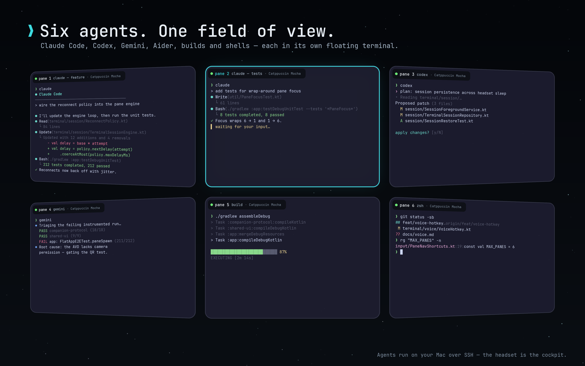

Give every agent a place.
Keep Claude, Codex, Gemini, builds, and hand-driven shells visible in a spatial layout.
Orb XR turns your headset into a command center for the agents, builds, and shells already running on your Mac.
Your Mac remains the source of truth

Keep Claude, Codex, Gemini, builds, and hand-driven shells visible in a spatial layout.
Your tools, files, sessions, and processes never leave the host machine. The headset is the window.
Step away without killing your work. Your live sessions are ready when you put the headset back on.
THE HANDOFF
Download the lightweight Mac app and place it in Applications.
If Remote Login is off, the companion explains why and opens macOS Sharing. Then it prepares your secure QR.
Scan the QR from Orb XR and open your first live terminal.
MAC COMPANION
Download the companion to bring its terminals into your Orb XR workspace.